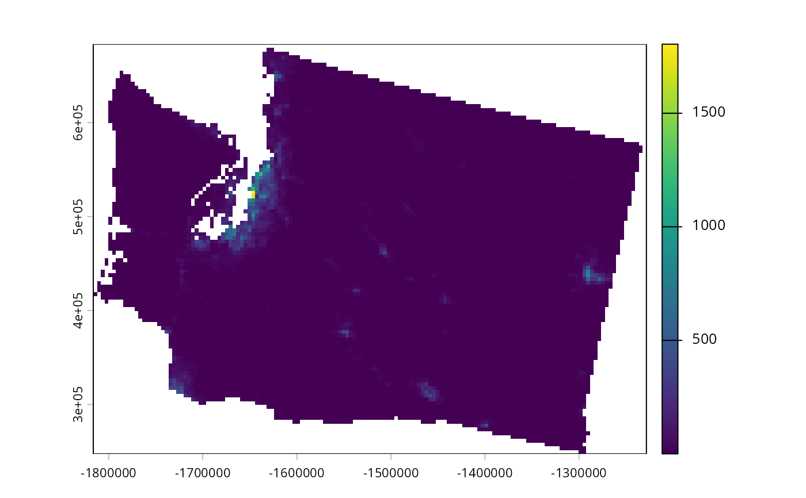
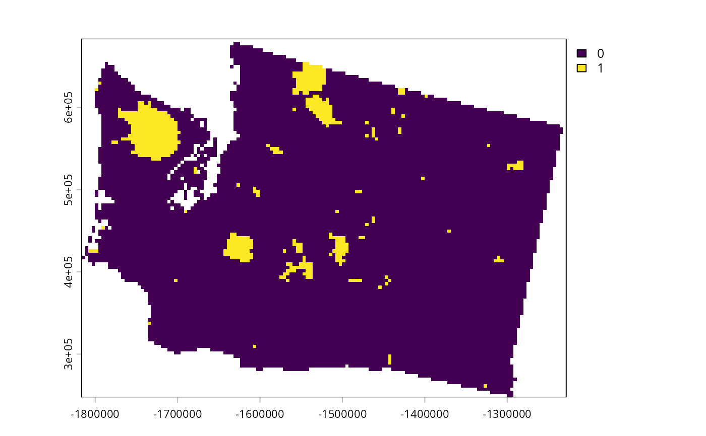
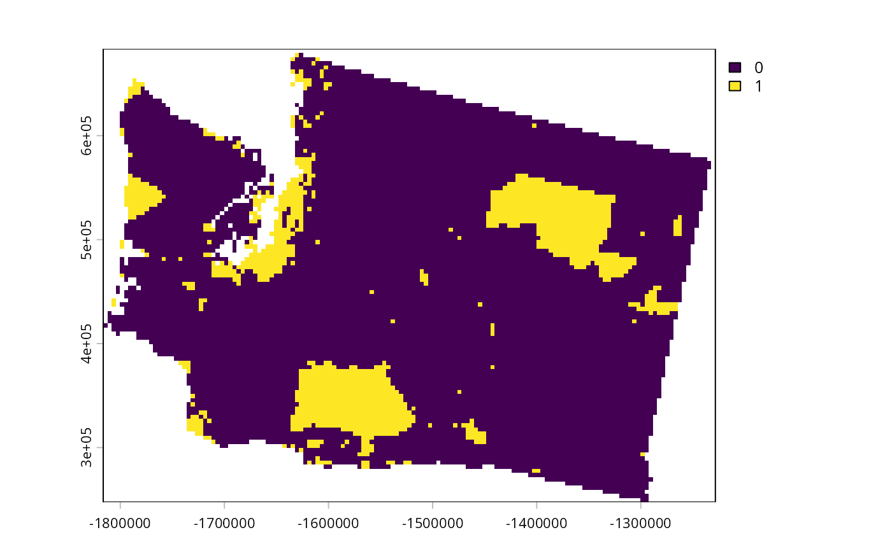
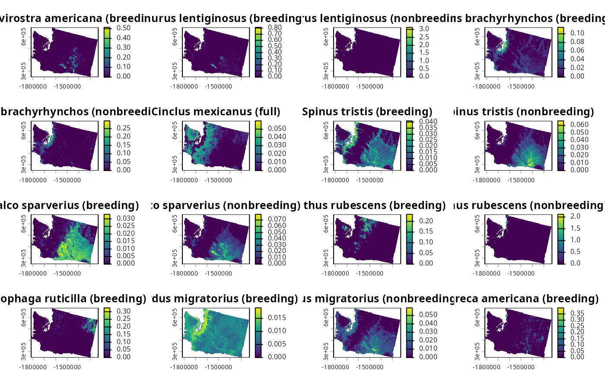

Conservation planning dataset for Washington, The United States of America.
Usage
get_wa_pu()
get_wa_locked_in()
get_wa_locked_out()
get_wa_species()
get_wa_attr()
get_wa_carbon()Format
- get_wa_pu
terra::rast()object.- get_wa_locked_in
terra::rast()object.- get_wa_locked_out
terra::rast()object.- get_wa_carbon
terra::rast()object.- get_wa_species
terra::rast()object.- get_wa_attr
tibble::tibble()object.
Details
The following functions are provided to import data:
get_wa_pu()Import planning unit data. The planning units are a single layer
terra::rast()object. Cell values denote land acquisition costs. These data were originally obtained from Nolte (2020 a,b).get_wa_locked_in()Import locked in data. The locked in data are a single layer
terra::rast()object. Cell values denote binary values indicating if each cell is predominantly covered by protected areas (excluding those with no mandate for biodiversity protection). These data were originally obtained from USGS (2022)get_wa_locked_in()Import locked out data. The locked out data are a single layer
terra::rast()object. Cell values denote binary values indicating if each cell is predominantly covered by urban areas. These data were originally obtained from the Commission for Environmental Cooperation (2020)get_wa_carbon()Import vulnerable carbon data. The carbon data a single layer
terra::rast()object. Cell values denote continuous values representing the amount of carbon sequestered that is vulnerable to be released through typical land-use conversion. These data were originally obtained from the Noon et al. (2021, 2022)get_wa_species()Import species distribution data. The feature data are a multi-layer
terra::rast()object. It contains the spatial distribution of 258 bird species. To account for migratory patterns, data are provided for the breeding and non-breeding distributions of species (indicated by"breeding"and"non-breeding"in the layer names). If a species is lacking such information, then the species is denoted with its full distribution (as indicated"full"in the layer names). These data were originally obtained from the eBird Status and Trends dataset (Fink et al. 2020). To ensure backwards compatibility with previous versions of the package,get_wa_features()can also be used to access these data.get_wa_attr()Import attribute data about the species. The feature attribute data are a data frame (
tibble::tibble()) object. It contains taxonomic information for each feature (i.e., layer inget_wa_species()) as well as estimates of public interest (derived from Mittermeier et al. 2021) and extinction risk (based on the methodology of Davis et al. 2018 and and threat status classification data from IUCN 2025). Since Mittermeier et al. (2021) did not contain public interest scores for all features, scores were interpolated for features missing scores based on average public interest score of features that belong to the same taxonomic family. This object has the following columns:- feature
Name of the feature (i.e.,
per get_wa_species()).- binomial
Taxonomic species and genus name of the feature.
- family
Taxonomic family name of the feature.
- order
Taxonomic order of the feature.
- extinction_prob
Probability of extinction.
- interest_score
Public interest score.
References
Commission for Environmental Cooperation. (2020). 2015 Land Cover of North America at 30 Meters. North American Land Change Monitoring System, 2nd Edition, https://www.cec.org:443/north-american-environmental-atlas/land-cover-30m-2015-landsat-and-rapideye/.
Davis M, Faurby S, and Svenning J-C (2018) Mammal diversity will take millions of years to recover from the current biodiversity crisis. Proceedings of the National Academy of Sciences, 115: 11262–11267.
Fink D, Auer T, Johnston A, Ruiz-Gutierrez V, Hochachka WM and Kelling S (2020) Modeling avian full annual cycle distribution and population trends with citizen science data. Ecological Applications, 30: e02056.
IUCN (2025) The IUCN Red List of Threatened Species. Version 2025-2. https://www.iucnredlist.org. Accessed on 13 May 2026.
Mittermeier JC, Roll U, Matthews TJ, Correia R, and Grenyer R (2021) Birds that are more commonly encountered in the wild attract higher public interest online. Conservation Science and Practice, 3: e340.
Nolte C (2020a) Data for: High-resolution land value maps reveal underestimation of conservation costs in the United States. Dryad, Dataset, doi:10.5061/dryad.np5hqbzq9 .
Nolte C (2020b) High-resolution land value maps reveal underestimation of conservation costs in the United States. Proceedings of the National Academy of Sciences, 117: 29577–29583.
Noon ML, Goldstein A, Ledezma JC, Roehrdanz PR, Cook-Patton SC, Spawn-Lee SA, Wright TM, Gonzalez-Roglich M, Hole DG, Rockström J, and Turner WR (2022) Mapping the irrecoverable carbon in Earth's ecosystems. Nature Sustainability, 5: 37–46.
Noon ML, Goldstein A, Ledezma JC, Roehrdanz PR, Cook-Patton SC, Spawn-Lee SA, Wright TM, Gonzalez-Roglich M, Hole DG, Rockström J, and Turner WR (2021) Mapping the irrecoverable carbon in Earth's ecosystems (2.0) [Data set]. Zenodo. doi:10.5281/zenodo.4091029 .
U.S. Geological Survey (USGS) Gap Analysis Project (GAP) (2022) Protected Areas Database of the United States (PAD-US) 3.0: U.S. Geological Survey data release, doi:10.5066/P9Q9LQ4B .
Examples
# load packages
library(terra)
# import data
wa_pu <- get_wa_pu()
wa_species <- get_wa_species()
wa_attr <- get_wa_attr()
wa_locked_in <- get_wa_locked_in()
wa_locked_out <- get_wa_locked_out()
wa_carbon <- get_wa_carbon()
# preview planning units
print(wa_pu)
#> class : SpatRaster
#> size : 109, 147, 1 (nrow, ncol, nlyr)
#> resolution : 4000, 4000 (x, y)
#> extent : -1816382, -1228382, 247483.5, 683483.5 (xmin, xmax, ymin, ymax)
#> coord. ref. : +proj=laea +lat_0=45 +lon_0=-100 +x_0=0 +y_0=0 +ellps=sphere +units=m +no_defs
#> source : wa_pu.tif
#> name : cost
#> min value : 0.298665
#> max value : 1804.183838
plot(wa_pu)

# preview locked in
print(wa_locked_in)
#> class : SpatRaster
#> size : 109, 147, 1 (nrow, ncol, nlyr)
#> resolution : 4000, 4000 (x, y)
#> extent : -1816382, -1228382, 247483.5, 683483.5 (xmin, xmax, ymin, ymax)
#> coord. ref. : +proj=laea +lat_0=45 +lon_0=-100 +x_0=0 +y_0=0 +ellps=sphere +units=m +no_defs
#> source : wa_locked_in.tif
#> name : protected areas
#> min value : 0
#> max value : 1
plot(wa_locked_in)

# preview locked out
print(wa_locked_out)
#> class : SpatRaster
#> size : 109, 147, 1 (nrow, ncol, nlyr)
#> resolution : 4000, 4000 (x, y)
#> extent : -1816382, -1228382, 247483.5, 683483.5 (xmin, xmax, ymin, ymax)
#> coord. ref. : +proj=laea +lat_0=45 +lon_0=-100 +x_0=0 +y_0=0 +ellps=sphere +units=m +no_defs
#> source : wa_locked_out.tif
#> name : urban areas
#> min value : 0
#> max value : 1
plot(wa_locked_out)

# preview species
print(wa_species)
#> class : SpatRaster
#> size : 109, 147, 396 (nrow, ncol, nlyr)
#> resolution : 4000, 4000 (x, y)
#> extent : -1816382, -1228382, 247483.5, 683483.5 (xmin, xmax, ymin, ymax)
#> coord. ref. : +proj=laea +lat_0=45 +lon_0=-100 +x_0=0 +y_0=0 +ellps=sphere +units=m +no_defs
#> source : wa_features.tif
#> names : Recur~ding), Botau~ding), Botau~ding), Corvu~ding), Corvu~ding), Cincl~full), ...
#> min values : 0, 0, 0, 0, 0, 0, ...
#> max values : 0.514, 0.812, 3.129, 0.115, 0.296, 0.06, ...
plot(wa_species)

# preview attributes of species
print(wa_attr)
#> # A tibble: 396 × 6
#> feature binomial family order extinction_prob interest_score
#> <chr> <chr> <chr> <chr> <dbl> <dbl>
#> 1 Recurvirostra americana… Recurvi… Recur… Char… 0.0009 0
#> 2 Botaurus lentiginosus (… Botauru… Ardei… Pele… 0.0009 1
#> 3 Botaurus lentiginosus (… Botauru… Ardei… Pele… 0.0009 1
#> 4 Corvus brachyrhynchos (… Corvus … Corvi… Pass… 0.0009 0
#> 5 Corvus brachyrhynchos (… Corvus … Corvi… Pass… 0.0009 0
#> 6 Cinclus mexicanus (full) Cinclus… Cincl… Pass… 0.0009 0
#> 7 Spinus tristis (breedin… Spinus … Fring… Pass… 0.0009 0
#> 8 Spinus tristis (nonbree… Spinus … Fring… Pass… 0.0009 0
#> 9 Falco sparverius (breed… Falco s… Falco… Falc… 0.0009 5281
#> 10 Falco sparverius (nonbr… Falco s… Falco… Falc… 0.0009 5281
#> # ℹ 386 more rows